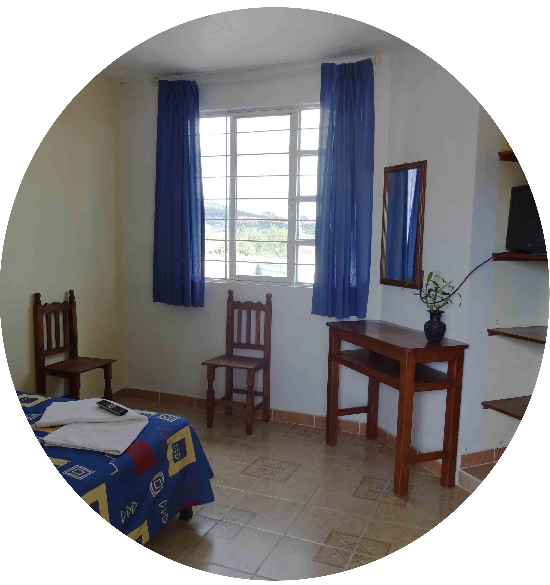

Habitaciones

Sencilla

Doble
Todas nuestras habitaciones cuentan con una decoración de estilo colonial:
Contamos con servicio de recepcion las 24hrs y te ayudamos a agendar algunas actividades turisticas.
All rights reserved.